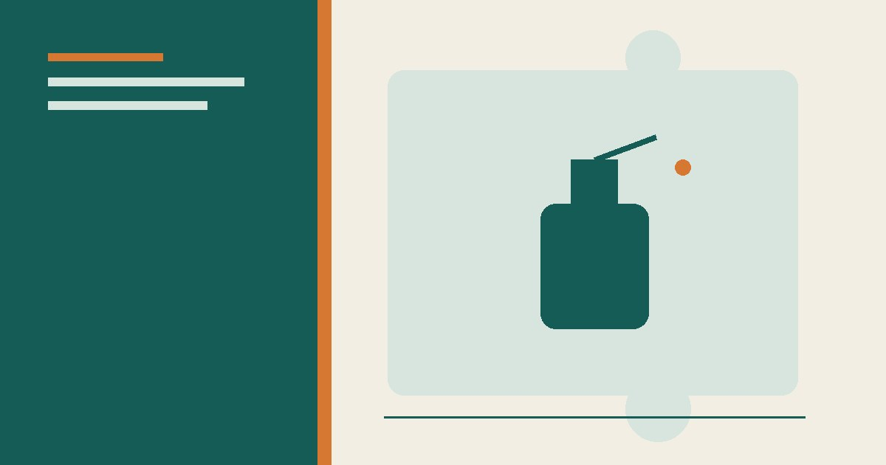

مواد تنظيف لا تخلطها معًا: جدول سلامة منزلي
جدول عملي يوضح خلطات التنظيف الخطرة، طريقة قراءة الملصق، التهوية، التخزين، وما يجب فعله عند التعرض للأبخرة.

الخلاصة السريعة
لا تخلط مبيّض الكلور مع الأمونيا أو الخل أو الأحماض أو أي منظف آخر. لا تخلط منتجين لمجرد أن كليهما مخصص للتنظيف. استخدم منتجًا واحدًا وفق ملصقه، وهوِّ المكان، واحفظ العبوة الأصلية بعيدة عن الأطفال. عند ظهور سعال شديد أو ضيق تنفس أو حرقان، غادر إلى هواء نقي واتصل بالطوارئ أو مركز السموم المحلي.
لماذا الخلط خطر؟
منتجات التنظيف صممت لتعمل بتركيبة محددة. جمعها قد يطلق أبخرة مهيجة أو سامة أو يولد حرارة وتناثرًا. لا يمكن معرفة أمان الخلطة من الرائحة أو اللون، ولا تجعل كمية الماء الخلط آمنًا.
جدول «لا تخلط»
| المنتج الأول | لا تخلطه مع | البديل الآمن |
|---|---|---|
| مبيّض الكلور | الأمونيا، الخل، منظف المرحاض، الكحول، أو أي منظف آخر | استخدمه وحده وبالتخفيف المكتوب على الملصق |
| منظف المرحاض الحمضي | مبيّض الكلور أو منظف آخر | اشطف وفق التعليمات وانتظر قبل منتج مختلف |
| مزيل الانسداد | أي مزيل أو منظف ثانٍ | اتبع الملصق أو استخدم فني سباكة |
| بيروكسيد الهيدروجين | الخل في الوعاء نفسه | لا تصنع خلطات؛ استخدم منتجًا واحدًا مناسبًا |
كيف تقرأ الملصق؟
- حدد المادة الفعالة والتحذيرات ومعدات الحماية.
- اتبع نسبة التخفيف ومدة بقاء السطح رطبًا.
- لا تنقل المنتج إلى عبوة مشروبات ولا تنزع الاسم.
- لا تستخدم منتجًا صناعيًا داخل المنزل دون تعليمات صريحة.
إذا حدث خلط بالخطأ
- لا تضف مادة ثالثة ولا تحاول «معادلة» الخليط.
- ابتعد عن المكان إلى هواء نقي دون تعريض نفسك للأبخرة.
- اتصل بالطوارئ أو مركز السموم المحلي واذكر أسماء المنتجات.
- إذا لامس الجلد أو العين، اتبع تعليمات الملصق والجهة الطبية.
بطاقة قبل التنظيف
اكتب: السطح، نوع الاتساخ، المنتج المختار، التخفيف، مدة التماس، والتهوية. إذا لم تجد هذه المعلومات على العبوة فلا ترتجل خلطة.
المصادر والمراجع
رُوجعت المعلومات العامة في هذا المقال بالاستناد إلى المصادر التالية. الروابط الخارجية قد تُحدّث محتواها بمرور الوقت.